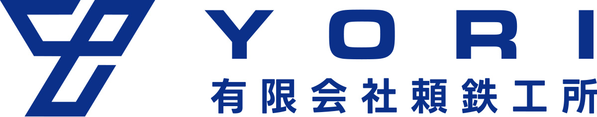
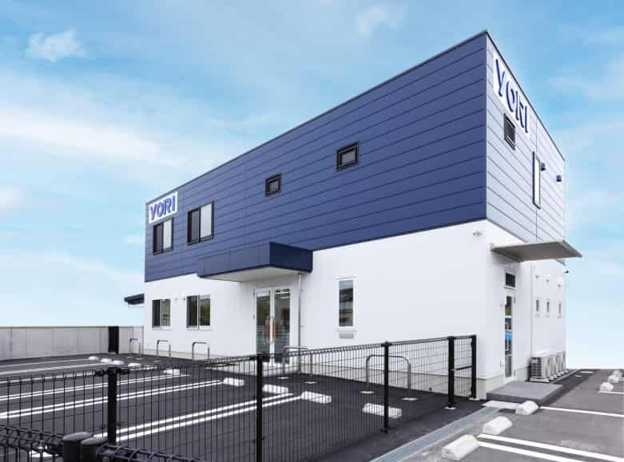
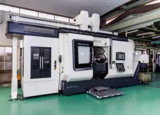
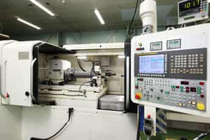
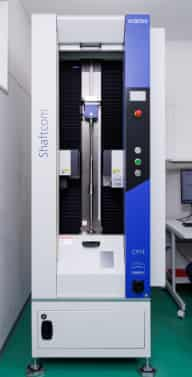
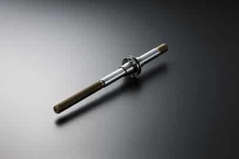
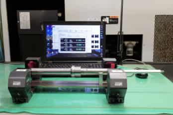

About
プロフィール
頼 毅（より つよし）の個人サイトをご覧いただき、ありがとうございます。 専務として、日々の業務が円滑に進む仕組みづくりと、現場に寄り添った判断の両立を大切にしています。
派手さや見せ方よりも、正確さ、継続性、そして安心して任せていただける対応を重視しています。

Tsuyoshi YoriOfficial Website
より つよし
専務として、現場の実情を踏まえながら、組織全体が安定して前へ進むための判断と支援を大切にしています。 目の前の業務に丁寧に向き合い、信頼の積み重ねによって着実な成果へつなげていきます。
現場と全体最適の両面から、安定した運営を支えます。
実務に根ざした判断を重ね、確かな対応につなげます。
パンフレット資料を通じて、技術力と設備環境をご覧いただけます。
About
頼 毅（より つよし）の個人サイトをご覧いただき、ありがとうございます。 専務として、日々の業務が円滑に進む仕組みづくりと、現場に寄り添った判断の両立を大切にしています。
派手さや見せ方よりも、正確さ、継続性、そして安心して任せていただける対応を重視しています。
Services
日常業務の進行管理、社内調整、全体最適を意識した運営支援。
社内外で必要となる情報を整理し、判断しやすい形で共有・可視化。
実務に即した対応を積み重ね、安定した業務運営を支えるサポート。
Gallery
パンフレット掲載資料から、製品や設備の一部をご紹介しています。 現場の技術力や設備環境が伝わるよう、代表的な写真を掲載しています。






Policy
判断の速さだけでなく、長く信頼されるための丁寧さを大切にしています。 日々の対応の積み重ねが、組織の安定と次の成長につながると考えています。
伝わりやすい言葉と確実な確認を大切にしながら、着実に進めます。
見えにくい部分の仕事にも手を抜かず、信頼につながる対応を心がけます。
形式だけでなく、実際の現場で機能する形を重視します。
Contact
ご相談やお問い合わせは、以下の連絡先よりお願いいたします。 内容を確認のうえ、丁寧に対応させていただきます。お急ぎの場合はお電話でも承ります。